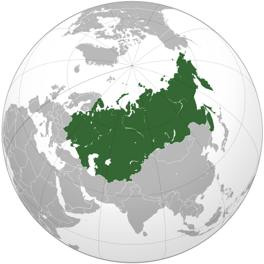

СССР
Сою́з Сове́тских Социалисти́ческих Респу́блик, сокращённо СССР, Сове́тский Сою́з, Сою́з ССР — государство в Евразии, существовавшее с 1922 года по 1991 год.
СССР на момент распада занимал почти 1⁄6 часть обитаемой суши Земли с населением 294 млн человек, а также 2-е место в мире по уровню промышленного производства — 16,5 % мирового объёма и 7-е место в мире по уровню национального дохода (3,4 %).
СССР был образован на территории, которую к 1917 году занимала Российская империя без Финляндии, части Польского царства и некоторых других территорий.Перейти к разделу «#География СССР» Советская власть на этой территории установилась в результате Октябрьской революции 1917 года и последующей Гражданской войны, итогом которой стала консолидация четырёх республик — РСФСР, Украинской ССР, Белорусской ССР и Закавказской СФСР. 30 декабря 1922 года они объединились в одно государство — Союз ССР — с едиными органами власти со столицей в Москве, с сохранением де-юре за каждой союзной республикой права свободного выхода из Союза.Перейти к разделу.
22 июня 1941 года Германия при поддержке союзников напала на СССР. Началась Великая Отечественная война, после победы в которой СССР стал, наряду с США, сверхдержавой. Советский Союз доминировал в мировой системе социализма, а также был соучредителем ООН, постоянным членом Совета Безопасности ООН с правом вето
Согласно Конституции 1977 года СССР провозглашался единым союзным многонациональным социалистическим государствомПерейти к разделу «#Политическая система и идеология». Союзные республики считались суверенными государствами. Порядок выхода республик из Союза с 1990 года регулировал специальный закон. Союзная республика имела право вступать в отношения с иностранными государствами, заключать с ними договоры и обмениваться дипломатическими и консульскими представителями, участвовать в деятельности международных организаций. Среди 50 стран-основателей ООН наряду с СССР были и две его союзные республики: БССР и УССР
Из-за низкой эффективности экономической системы, сильной зависимости от цен на энергоресурсы, существенными расходами на гонку вооружений, массового дефицита товаров, межнациональных противоречий и других проблем во второй половине 1980-х годов в СССР произошёл экономический и политический кризис. Обострилось внутреннее политическое противостояние. Попытки реформирования советской системы (демократизация, переход к рыночной экономике и многопартийности) не помогли решить накопившиеся противоречия. В 1988—1991 годах произошёл ряд законодательных конфликтов между союзным центром и союзными республикамиПерейти к разделу «Перестройка (1985—1991)». Последствия всех этих событий привели к распаду СССР (см. Причины распада).
17 марта 1991 года состоялся Всесоюзный референдум о сохранении СССР, на котором 77,85 % граждан советских республик, принявших участие в референдуме, высказались за сохранение союза как обновлённой Федерации равноправных социалистических суверенных республик. Попытка государственного переворота ГКЧП в августе 1991 года вызвала массовые народные демонстрации по всему СССР в защиту демократического курса Перестройки и законно избранной в 1989 году государственной власти — депутатов Съезда народных депутатов СССР. Эпицентром противостояния путчистам считаются события у Белого дома в Москве. В результате попытка захвата власти ГКЧП провалилась. 8 декабря 1991 года тремя государствами-учредителями Союза были подписаны Соглашения о прекращении существования СССР и создании СНГ. 26 декабря 1991 года Совет Республик Верховного Совета СССР принял декларацию о прекращении существования СССР
Российская Федерация была признана де-факто государством-правопреемником СССР в международно-правовых отношениях и заняла его место в Совете Безопасности ООН.Перейти к разделу «#Распад Советского Союза (1990—1991)» В то же время, согласно действующему законодательству Украины, последняя является преемницей прав и обязательств УССР и международных договоров СССР. Между государствами существует незакрытый вопрос о государственном долге СССР.
Карта СССР(1945–1991)
[ОБРАТНО НА ГЛАВНУЮ] [ОБРАТНО К РЕСПУБЛИКАМ]